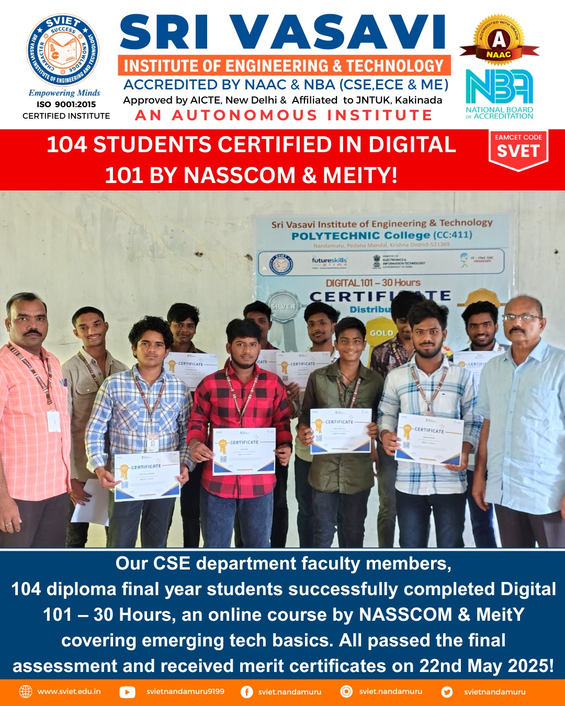
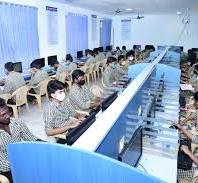
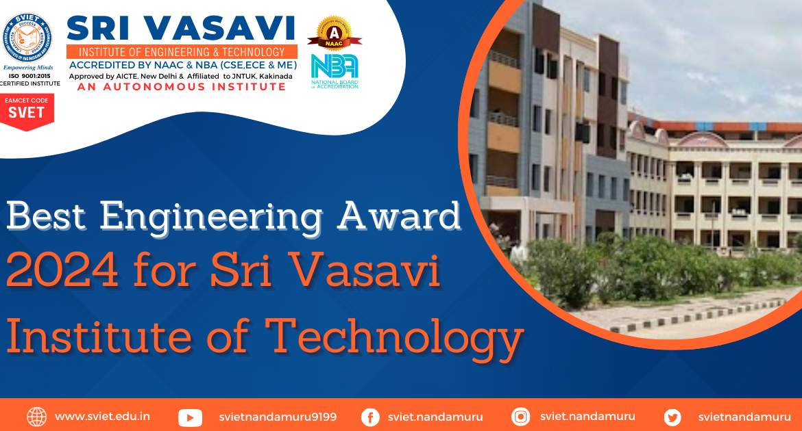

SRI VASAVI INSTITUTE OF ENGINEERING AND TECHNOLOGY
Approved By AICTE, New Delhi & Affiliated to JNTUK, Kakinada
Accredited by NAAC, NBA(CSE, ECE & ME)
AN AUTONOMOUS INSTITUTE
Home
About
Admissions
Login
Registration

Sri Vasavi Institute of Engineering and Technology (SVIET), located in Nandamuru, Andhra Pradesh, is an engineering college established in 2007 by industrialists.
It's situated in a serene, rural environment away from the city, offering a pollution-free learning atmosphere. SVIET aims to be a leading engineering institution in rural India, focusing on providing a creative learning environment, promoting industry-institute interaction, fostering good citizens, and improving technical excellence
DEPARTMENTS
ECE:
Electronics and communication engineering
CSE:
Computer Science and Engineering
AIML:
Artificial Intelligence & Machine Learning
student Login
ECAP:
Student Ecap
Student Registration:
Student Registration
Images
 